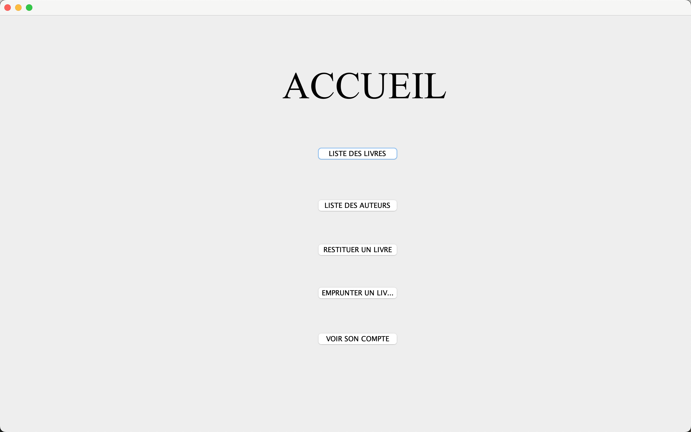
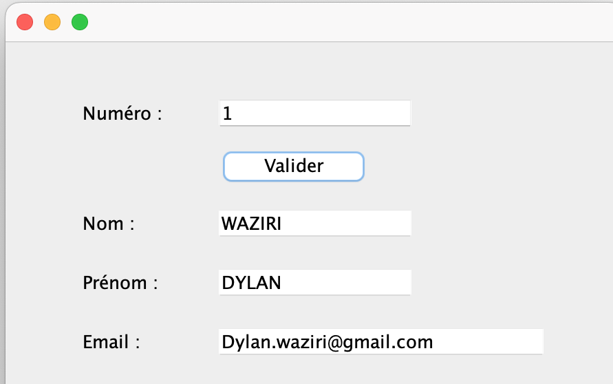
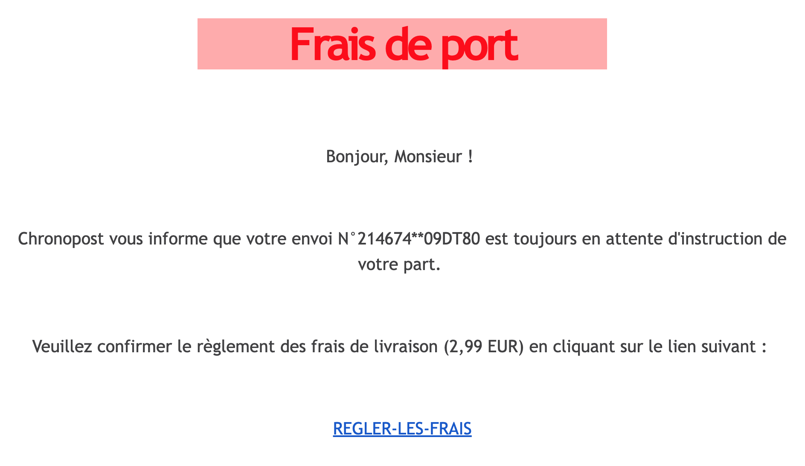
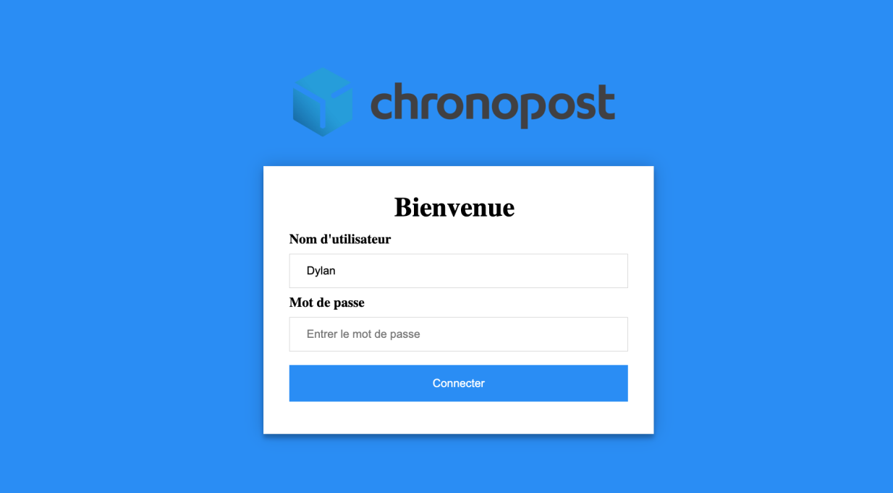
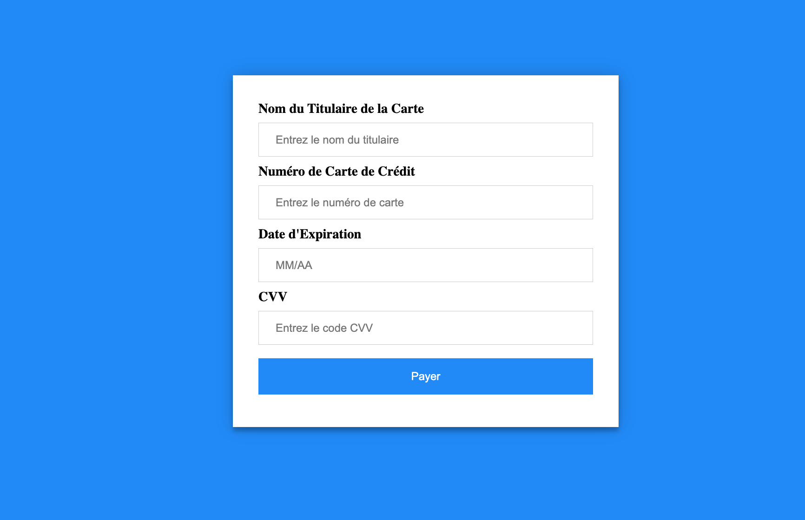
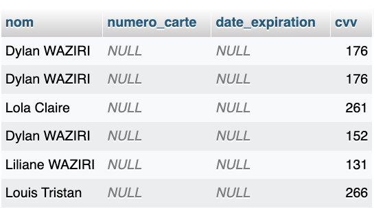
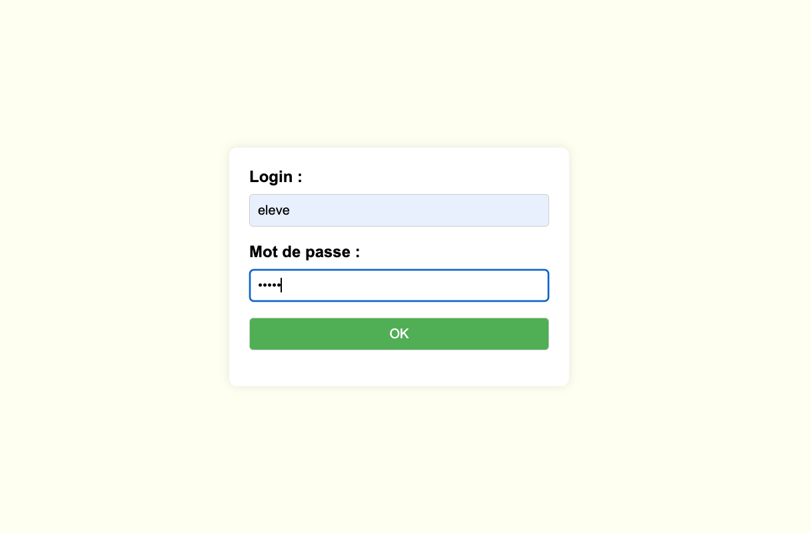
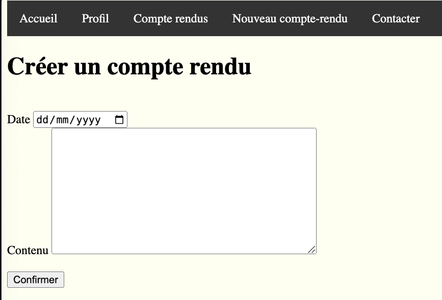
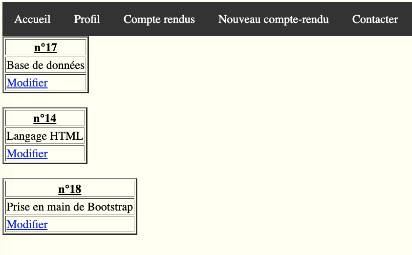

Bienvenue dans mon monde !
Portfolio.
Découvrez mes projets réalisés au cours de mon parcours.
Projets Réalisés
Borne de Bibliothèque en Java
 Conception et développement d'une borne de bibliothèque pour l'emprunt et la réservation de livres. Intégration de bases de données MySQL et développement de requêtes SQL pour une gestion efficace des données, facilitant ainsi l'accès et la gestion des livres par les utilisateurs.
2023-2024
Formulaire de Phishing
   Création d'un site de phishing simulé pour sensibiliser aux risques de sécurité informatique. Développé en HTML, CSS, et PHP, ce projet illustre les techniques de phishing et vise à former les utilisateurs sur la manière de se protéger contre ces menaces.
2023-2024
Site Web de Compte Rendu de Stage
  Développement d'un site web dynamique en HTML, CSS, et PHP permettant aux utilisateurs de créer, modifier et visualiser des comptes rendus de stage. Ce projet inclut des fonctionnalités de gestion des utilisateurs pour les étudiants et les enseignants, améliorant ainsi l'organisation des stages.
2023-2024
Projet Multilangue en FR/EN avec Django

Développement d'une application web multilingue utilisant le framework Django, permettant aux utilisateurs de basculer entre les langues française et anglaise. Le projet intègre une gestion de l'authentification des utilisateurs, des modèles de données pour le stockage des traductions, et une interface utilisateur adaptable aux préférences linguistiques.
2024